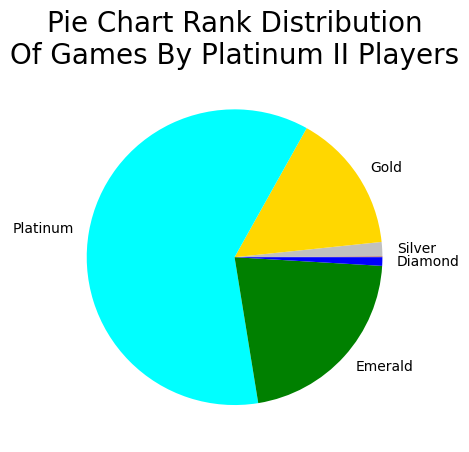

Rank Distribution Platinum II
In this analysis I looked into the players ranks from all the platinum games. Just like the Higher Ranking Team Win Rate, keep in mind that these games could've been played several weeks before the rank from that specific player has been pulled. There is no guarantee that the players in these games who all had about the same ranking at the time of the game still do so now. Nevertheless, this gives us an idea of how well Platinum II games are mixed between different ranks.
(Side Note: I didn't do this for Silver II games simply for time/capacity reasons and decided to go with the Platinum games since the rank is more central on the ranking scale)
